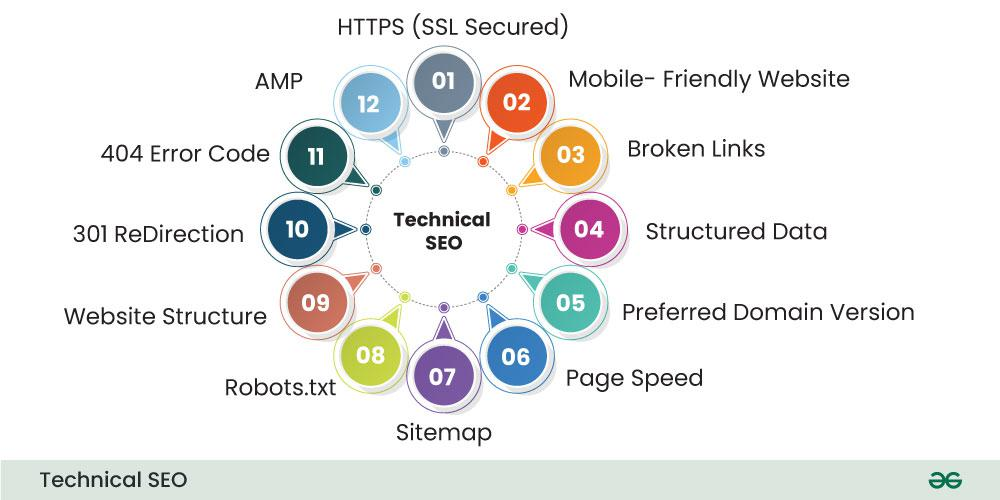

Technical SEO
Technical SEO focuses on how a website is built and how easily search engines can access it. It deals with the structure and performance of the site rather than only the words that appear on a page.
A page may contain strong information but still have problems when it loads slowly, contains broken links, or cannot be viewed correctly on a phone. Technical SEO helps remove those problems so the content can be reached and used.

Website Speed
Page speed affects how quickly visitors can begin using a website. Large image files, unnecessary code, and slow server responses can increase loading time. Visitors may leave when a page takes too long to appear.
Developers can improve performance by compressing images and removing code that the website does not need. Files should also be organized so browsers can load the page efficiently. These changes can improve both user experience and search visibility.
Mobile-Friendly Design
A mobile-friendly website adjusts to different screen sizes instead of requiring visitors to zoom or scroll sideways. Responsive layouts allow the same webpage to work on desktop computers, tablets, and phones.
Text should remain readable and navigation controls should be easy to select on a smaller screen. Testing the website at several widths can reveal layout problems that may not appear on a desktop monitor.
Crawling and Indexing
Crawling occurs when a search engine follows links and discovers webpages. Indexing occurs when information about an eligible page is stored so it may appear in future search results.
Clear navigation and working internal links help search engines move through a website. Missing pages, incorrect file paths, and confusing navigation can prevent important content from being reached. A logical site structure makes the website easier for both users and search engines to follow.